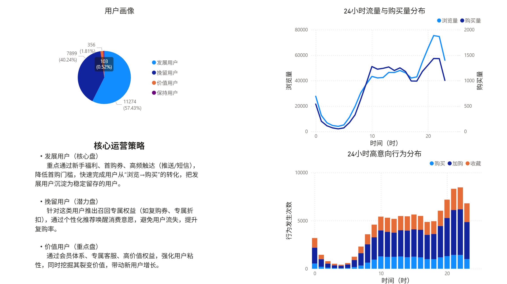
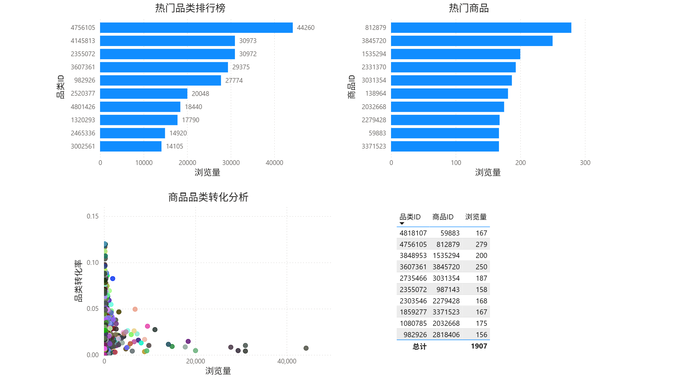

02 / Data Analytics · Business Intelligence
E-commerce
Behavior Analysis.
从电商行为数据出发，探索流量、转化漏斗、用户价值与商品表现，并尝试把数据洞察转化为业务分析结论。

01 / The problem
业务日志如何变成可读的决策线索？
大型用户行为日志包含浏览、收藏、加购与购买等多种事件。只观察单条记录很难判断用户路径在哪个阶段流失，也不容易比较不同人群和商品的表现。
这个项目尝试将数据清洗、业务指标设计、用户分层和 Power BI 可视化连接起来，为进一步的运营分析提供依据。
02 / The approach
数据处理、业务分析与可视化
项目基于阿里巴巴天池 UserBehavior 数据，仓库包含分块读取与 1% 抽样入库的 Python 脚本，以及 Power BI 报表文件和三张实际导出的看板截图。
01 / SOURCE用户行为日志
CSV 数据集
CSV 数据集
02 / CLEANPandas 清洗
1% 行级抽样
1% 行级抽样
03 / ANALYZE漏斗与用户分层
指标设计
指标设计
04 / SHOWPower BI
业务看板
业务看板
README 讨论了转化漏斗、RFM 分层、用户与商品效能分析；当前公开仓库尚未提供完整 SQL 查询和指标复算脚本，因此展示结论时需要保留统计口径说明。
03 / Actual screenshots
项目实际生成的图表
图片直接取自公开 GitHub 项目文件，而不是为了作品集重新绘制的概念图。点击可查看原图。


04 / Boundaries & next steps
让结果更可复现
现有图表是真实项目成果，但仓库的入库脚本使用 1% 行级抽样；留存、转化等指标可能受抽样方案影响，不能直接把所有结论当作全量结果。
目前 AI 运营诊断脚本读取的是预设品类指标，并非自动从数据库拉取的完整分析闭环；后续应补齐 SQL、指标定义、数据来源说明、抽样偏差评估及脚本化复现。
真实项目图表已公开；网页没有声称相关结论得到全量数据验证，也未把示例 AI 诊断写成已经自动化的生产系统。